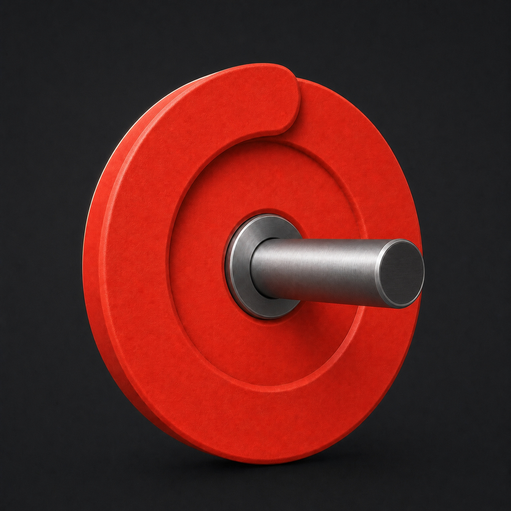
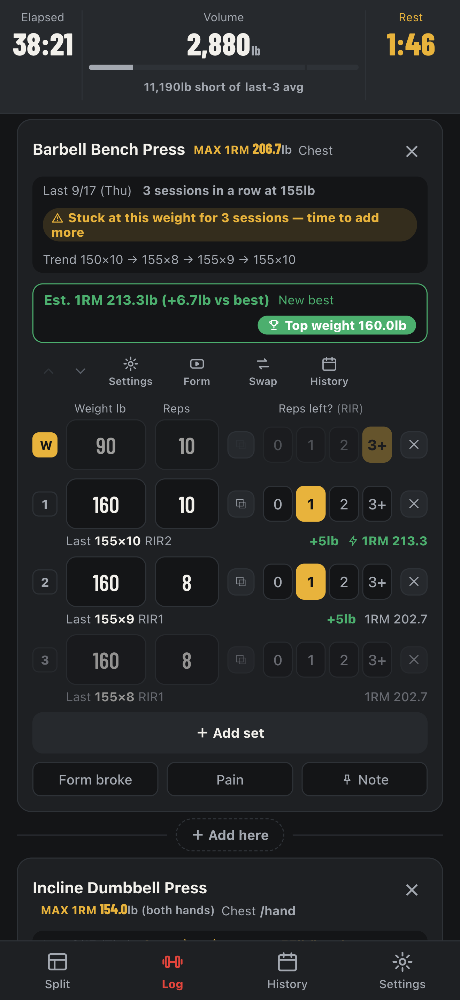

THE PRINCIPLE
A little more
than last time.
More weight or more reps.
Just beat last time, a little.
Progressive overload
WHAT THE RESEARCH SAYS
Muscle and strength, trained lifters, 8 weeks
Plotkin D et al. PeerJ. 2022
IN KURABELL

